OVI de Diseño de Sitios Web
LECTURAS
Ordenamiento por insecion:
El algoritmo de ordenamiento por inserción es un algoritmo de facil aplicación que permite el ordenamiento de una lista.
Su funcionamiento consiste en el recorrido por la lista seleccionando en cada iteración un valor como clave y compararlo con el resto insertándolo en el lugar correspondiente.
Estabilidad: Estable
Método: Inserción
Comparativo: Si
Uso de memoria: 1
Complejidad computacional:
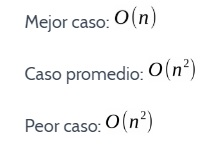Ordenamiento por inserción
Comenzamos con una lista de elementos no ordenados

Se selecciona el segundo valor como clave y se lo compara con los valores ubicados a su izquierda y se inserta en el lugar correspondiente
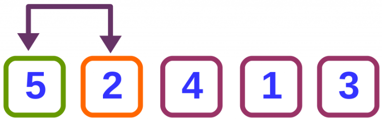
Se selecciona el siguiente número como clave y se repite el proceso para todos los valores anteriores
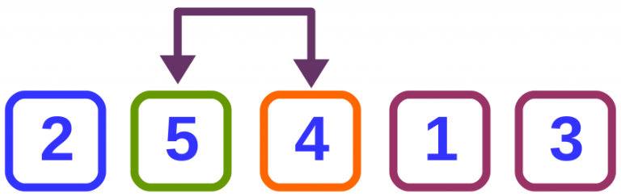 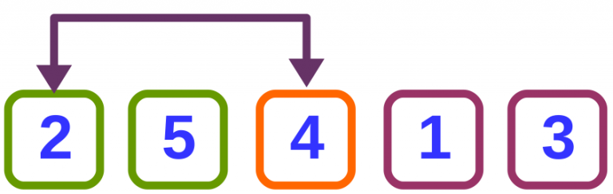
Se selecciona la siguiente clave
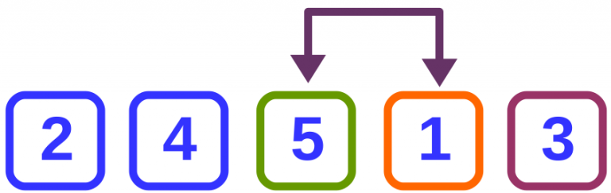 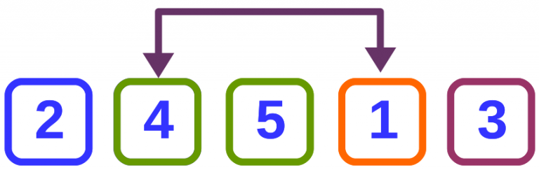 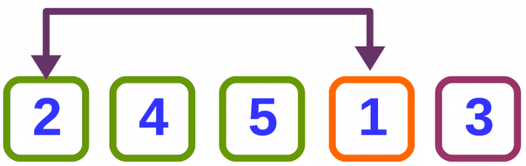
Finalmente se selecciona la última clave
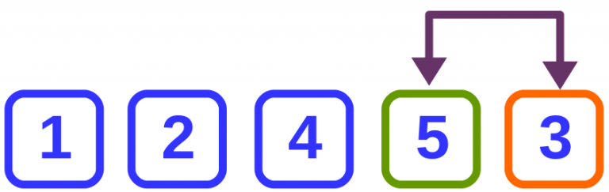 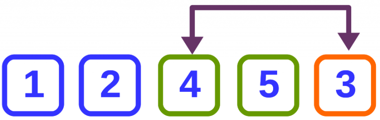 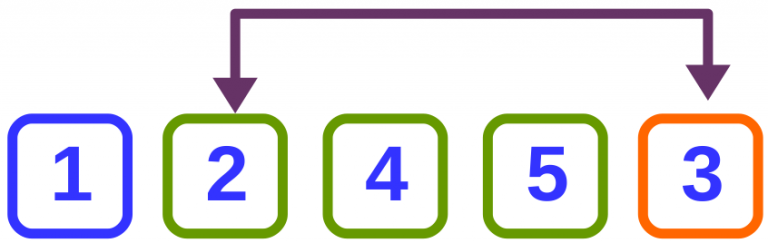 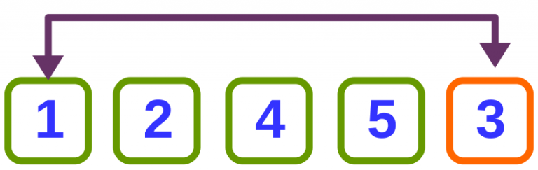
Al finalizar el algoritmo tenemos como resultado la lista ordenado